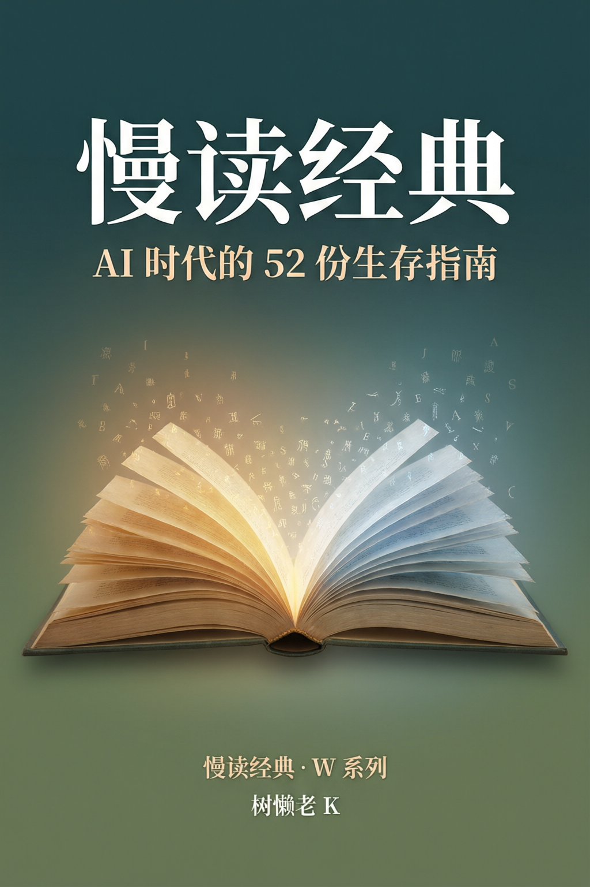

慢读经典 · W系列AI时代的52份生存指南
在 AI 可以在 0.3 秒内读完人类所有经典的时代，我们为什么还要慢慢读？本书是一个为期 52 周的经典解读计划的完整结集。每周选取一部西方经典与一部中国经典进行对读——不是做学术论文，而是把每一本经典拉到 2026 年的语境里重新审视。全书分四大篇、十二章，从"认识你自己"出发，经过"理想与放下""资本、权力与娱乐"，最终抵达"荒诞与相遇"。核心论点：信息不等于知识，知识不等于智慧。理解需要时间，需要反复咀嚼，需要用自己的生活去印证——这是 AI 替你做不了的事。
姊妹篇：《与思想者同游》（S系列）— 42位思想家的生命故事